Kurashiki, Okayama: things to do, food and stays
Kurashiki · Okayama
Kurashiki
Highlighted on the Okayama map.

Stay
センチュリオンホテル＆スパ 倉敷
Senchurion Hotel & Supa Kurashiki
Hotel in Achi, Kurashiki with breakfast available and a sauna.
ロイヤルパークホテル倉敷
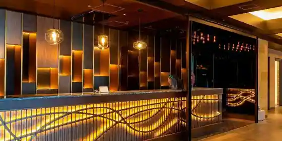
Roiyaru Park Hotel Kurashiki
Hotel in Achi, Kurashiki; 5-minute walk from (Jrkurashiki Station.
倉敷アイビースクエア
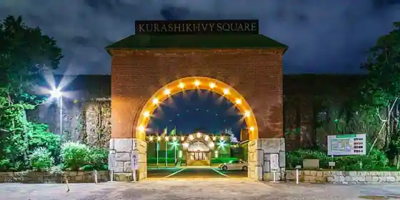
Kurashiki Aibisukuea
撚る屋 YORUYA
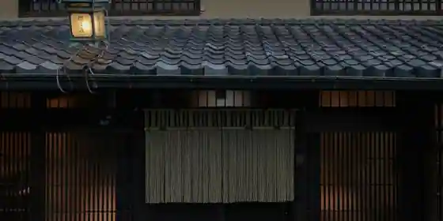
Hineru Ya YORUYA
倉敷ロイヤルアートホテル
Kurashiki Roiyaruato Hotel
倉敷美観地区 吉井旅館
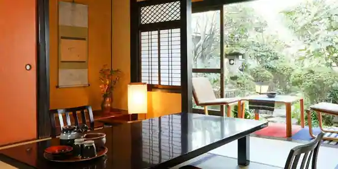
Kurashiki Bikan Chiku Yoshi Ryokan
旅館くらしき
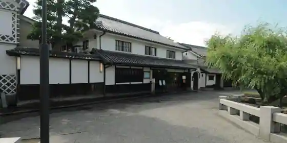
Ryokan Kurashiki
倉敷由加温泉ホテル山桃花
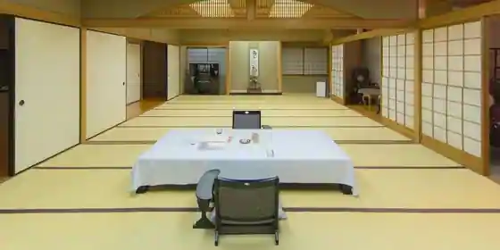
Kurashiki Yuka Onsen Hotel Yamamomo Hana
Hotel at Kurashikiyuka Onsen in Kojimayuka, Kurashiki with kaiseki dinners.
T7 滔々 日本郷土玩具館 蔵の宿
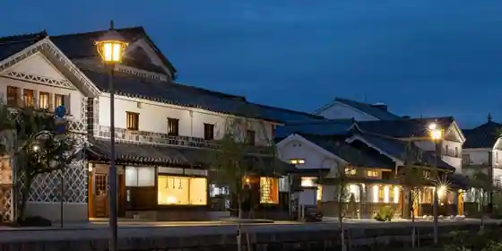
T7 To (Kurikaesi) Nippon Kyodo Gangu Kan Kura No Yado
天然温泉 阿智の湯 ドーミーイン倉敷
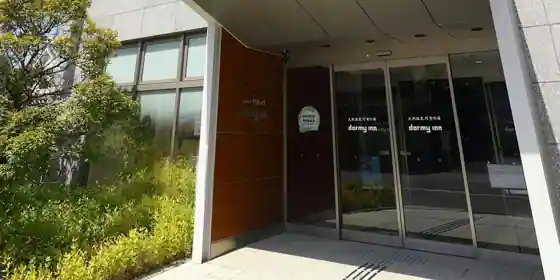
Tennen Onsen Achi No Yu Dormy Inn Kurashiki
アパホテル〈倉敷駅前〉
APA Hotel < Kurashiki Ekimae >
Hotel in Achi, Kurashiki; 1-minute walk from Jrkurashiki Station.
Heima
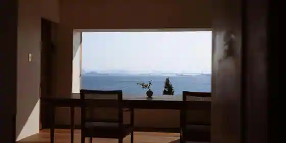
Heima
Inn in Kojimatokon, Kurashiki with one group per day.
Dining
ブリコール
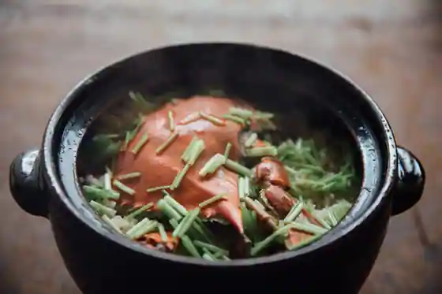
Burikoru
かしわ屋 こばやし
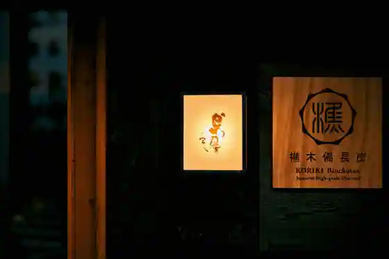
Kashiwa Ya Kobayashi
倉敷珈琲館
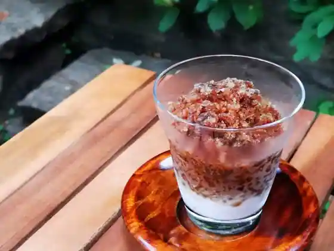
Kurashiki Coffee Kan
ピッツェリア ラ・チェネッタ
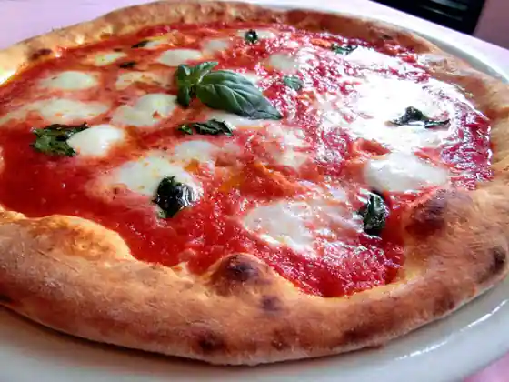
Pizzeria Ra Chenetta
本格手打ちうどん とも作
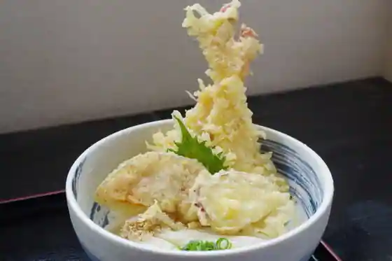
Honkaku Teuchi Chiudon Tomo Saku
竹波
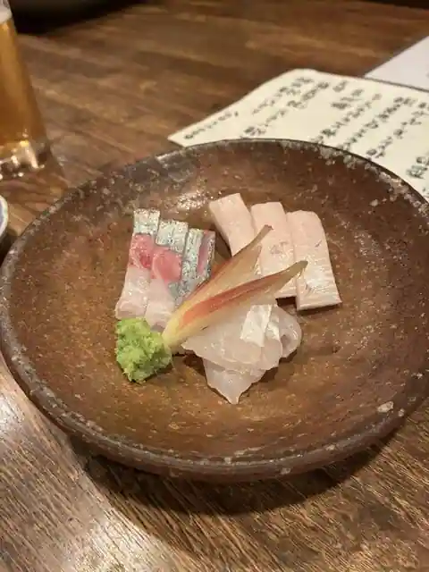
Takenami
馳走屋 菜乃花
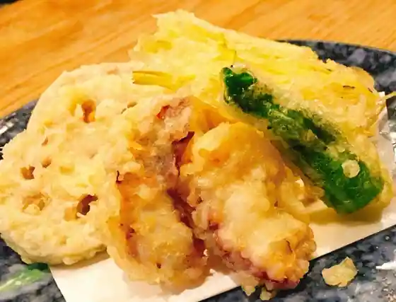
Chiso Ya Na No Hana
地酒と郷土料理 さわらや
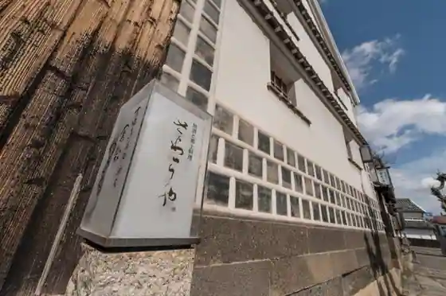
Jizake To Kyodoryori Sawaraya
食の家 まつおか
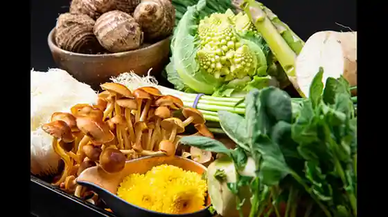
Shokuno Ie Matsuoka
ぶっかけうどん ふるいち 仲店
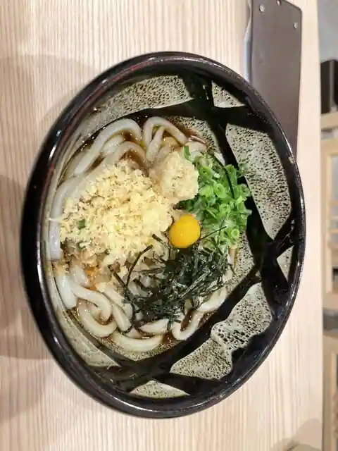
Bukkakeudon Furuichi Naka
町家喫茶 三宅商店
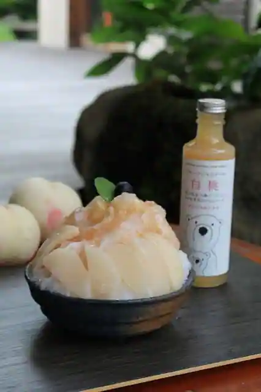
Choka Kissa Miyake Sho
mugi
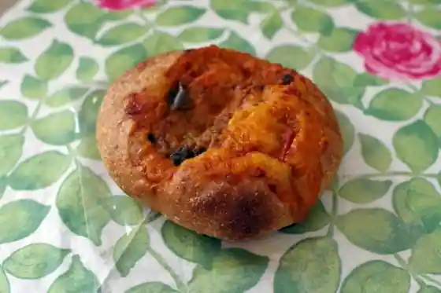
mugi
高田屋
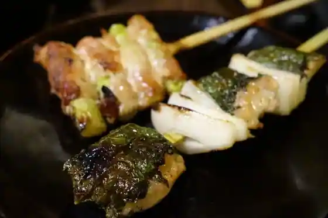
Takadaya
日本料理店 雲
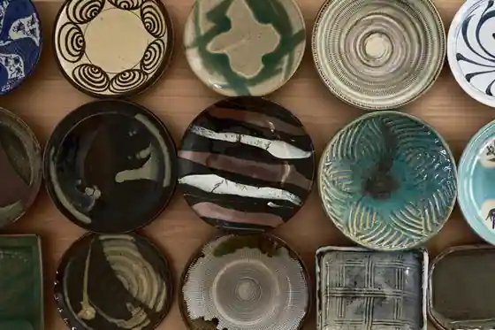
Nihonryori Kumo
大衆酒場水島ギャラリー
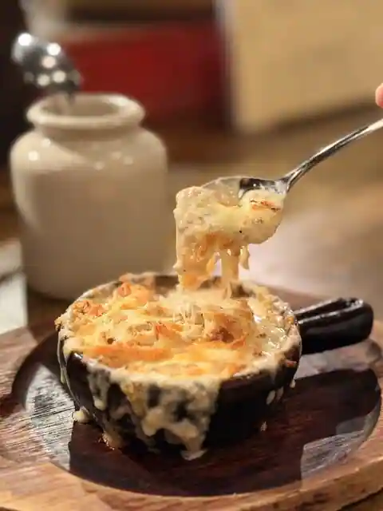
Taishu Sakaba Mizushima Gyarari
かっぱ
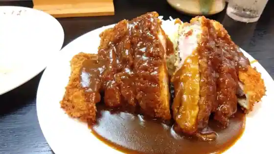
Kappa
浜吉
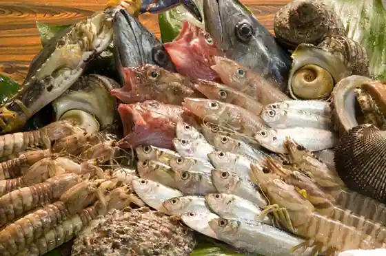
Hamakichi
藤原実堂
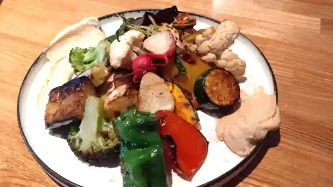
Fujiwara Mi Do
居食家 寿
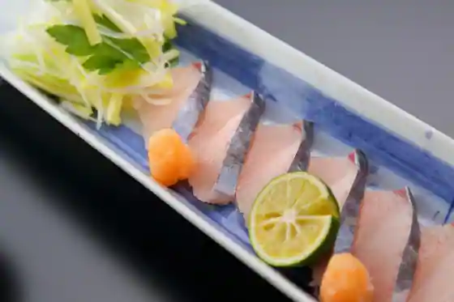
Kyo Shoku Ie Hisashi
中華蕎麦 みず川
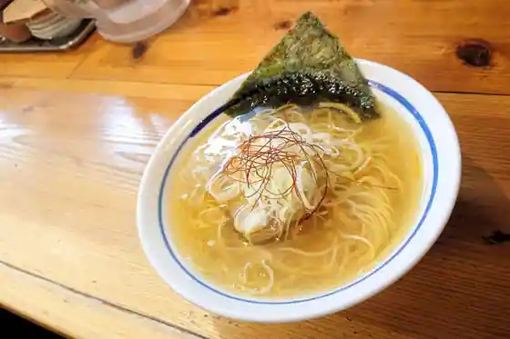
Chuka Soba Mizu Kawa
ブラッスリー エール
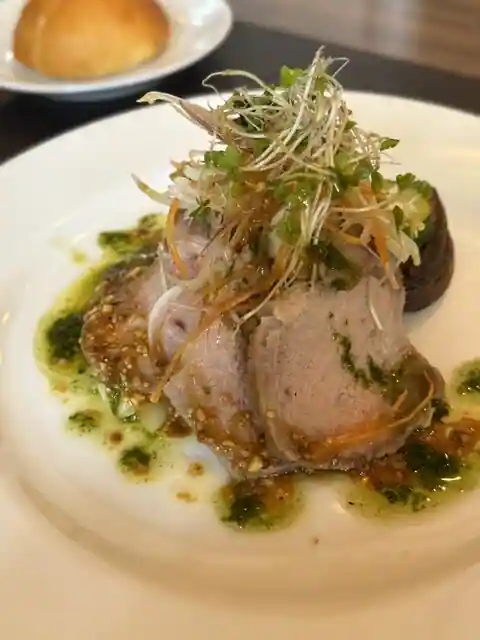
Burassuri Eru
パーラー 果物小町
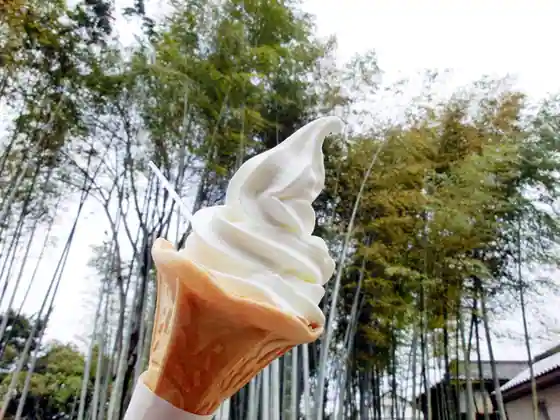
Para Kudamono Komachi
エル・グレコ
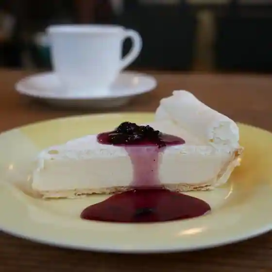
Eru Gureko
菊寿し
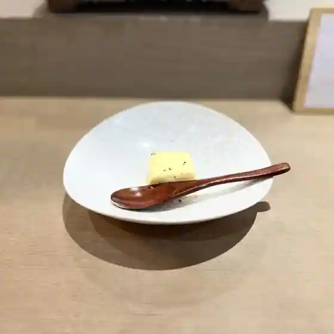
Kiku Hisashi Shi
Sights
Kurashiki Bikan Chiku
Ohara Art Museum

Kurashiki Yakusho

Kurashiki Aibiisukuea

Seto Bridge (Washiba Yama)